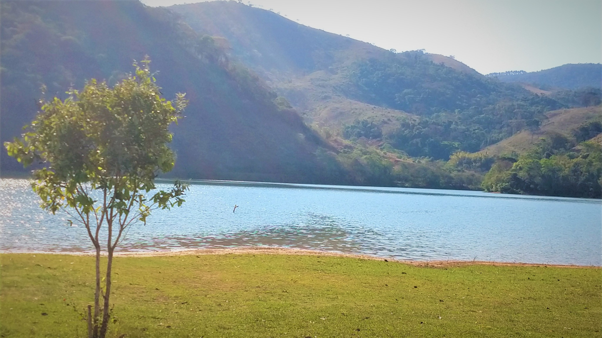
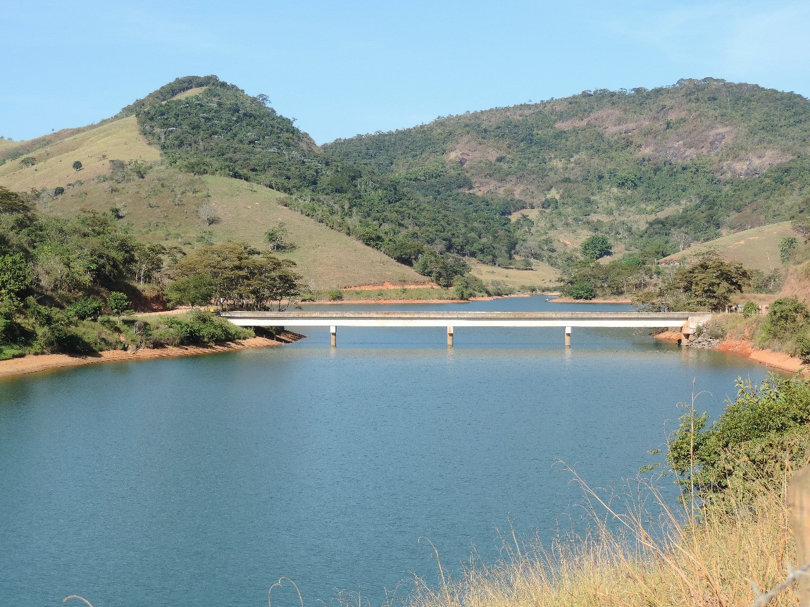
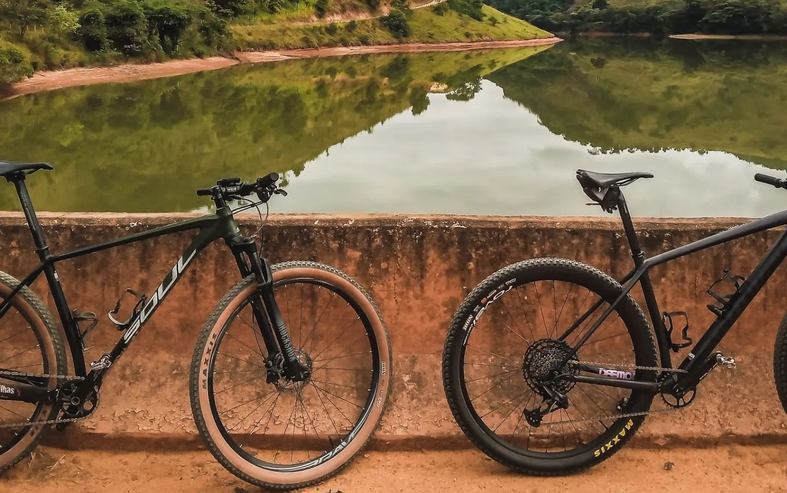

Localizada entre os distritos de Bicuíba (Raul Soares) e Granada (Abre Campo), está situada a uma distância de 9 km da cidade de Raul Soares. A represa foi construída no Rio Matipó para a implantação da Usina Hidrelétrica do Emboque. O acesso com barcos apenas é permitido através da Associação dos Pescadores e Amigos do Vale do Rio Matipó – APAVAMA, que mantém um pequeno clube com instalações rústicas, num local onde é possível ainda a prática de esportes náuticos e banhos.


O nome Lago do Emboque se deve a uma queda d’água de cerca de 30 metros de altura que foi extinta para dar lugar à barragem da hidrelétrica. O local ainda está sendo descoberto pelos visitantes, por isso o maior fluxo ainda é de moradores de Raul Soares, cidades vizinhas e distritos próximos. O acesso à barragem da Usina depende da autorização da empresa responsável.
O entorno do lago é repleto de lindas paisagens, é propício e muito utilizado pelos praticantes de Mountain Bike e também por trilheiros.
